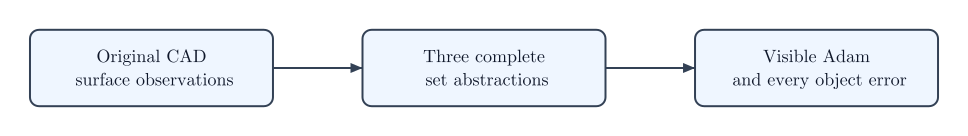
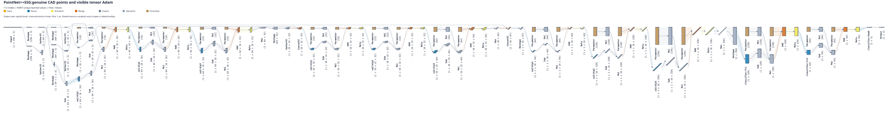
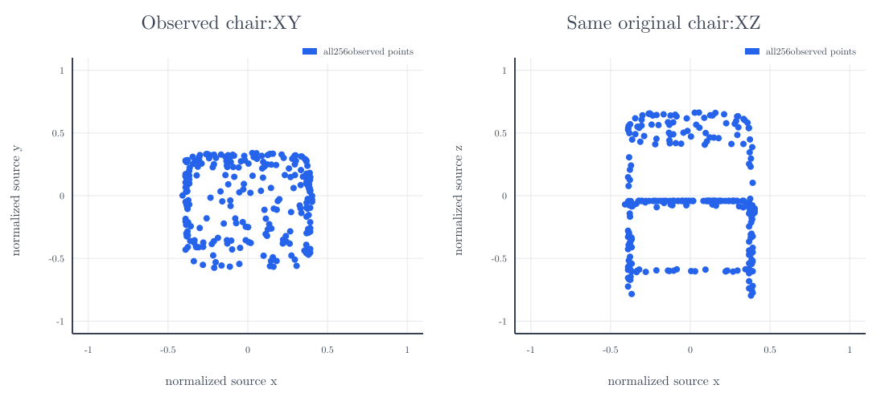
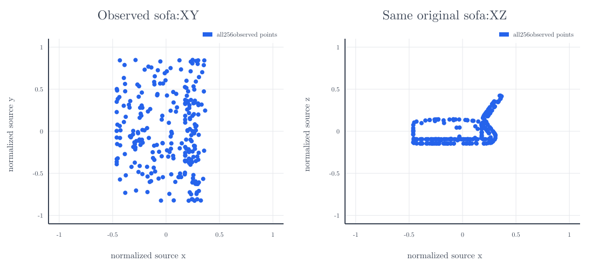
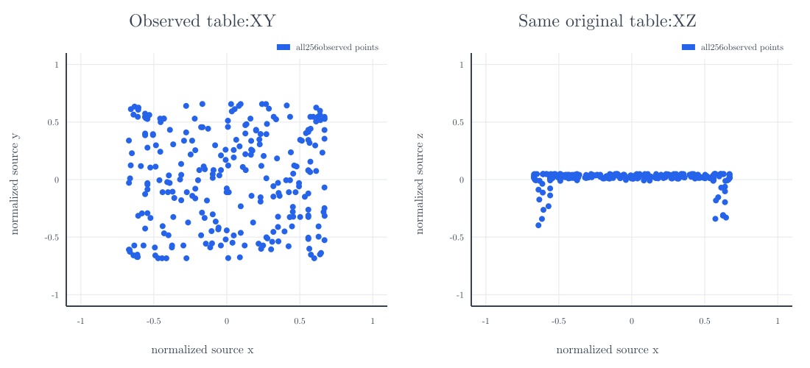
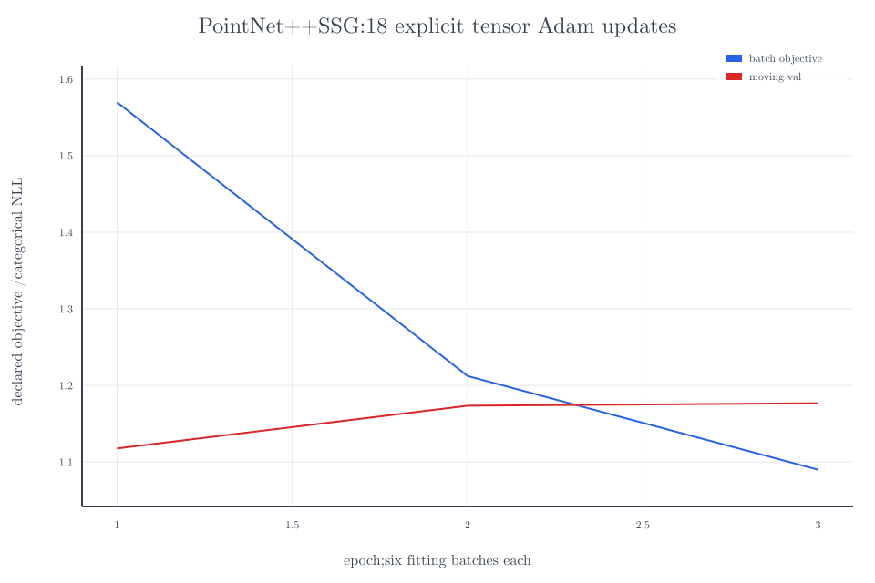
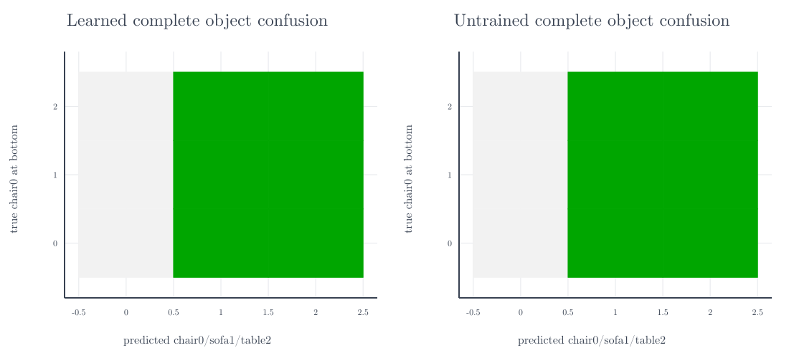
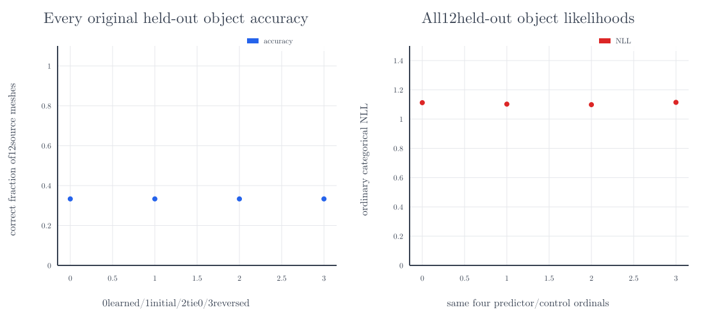
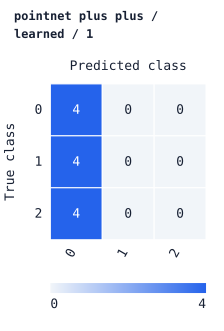

PointNet++SSG:genuine CAD points and visible tensor Adam
Abstract
Original CAD surface observations feed the complete PointNet++SSG graph. Every tensor Adam update,paired population-BN checkpoint and held-out object error is visible alongside source geometry and invariance limits.
Source example: examples/cpp/source/nn/1_convolutional_neural_networks/1.10_3d_and_video_convolutions/pointnet_plus_plus.cpp.
The method
Use actual sampled ModelNet surfaces,keep every source layer,and show the optimizer objective and update directly. Select matching learned/moving arrays on validation,restore XYZ-only inference,and report every held-out object and ordering control.
The concept diagram below is drawn by dm::graphics::Diagram. Its editable C++
source is the complete block below; regeneration uses the same datamunge toolchain
as the numerical examples. Exports consume the saved local SVG.
#include <dm/dm.hpp>
int main() {
std::filesystem::create_directories("build");
dm::graphics::Diagram diagram;
diagram.node("n0", {0.0, 0}, "Original CAD\n surface observations");
diagram.node("n1", {5.2, 0}, "Three complete\n set abstractions");
diagram.node("n2", {10.4, 0}, "Visible Adam\n and every object error");
diagram.edge("n0", "n1").edge("n1", "n2");
diagram.save_svg("build/pointnet_plus_plus_concept.svg");
}
Executed tensor architecture
This figure executes the inference configuration shown in the code, using a zero-valued shape probe without fitting or loading a checkpoint. Named stage boundaries group whole subgraphs where available; other nodes retain functional-layer detail. Exact batch-inclusive shapes and reachable parameter totals come from the trace. Shared linear scales map spatial dimensions and channel counts to blocks; the one-pixel visibility floor is disclosed in the legend. Labels use compact monospace text, rotate counterclockwise and sit beside their own glyphs. Arrows flow left to right; wide diagrams scroll at native size on the website.
#include <dm/dm.hpp>
int main() {
namespace n = dm::nn;
namespace m = n::models;
n::set_num_threads(2);
std::filesystem::create_directories("build");
const m::PointConfig c{4, 3, 256, 64, 16, 16, 32};
n::ParameterStore p(971), state(977);
n::Generator dropout(971);
n::Module architecture_model(
[&](const n::Tensor& image) { return m::PointNetPlusPlus(p, state, image, c).logits; },
"PointNet++SSG:genuine CAD points and visible tensor Adam");
n::ModelPlotOptions options;
options.style = n::ModelPlotStyle::Flow;
options.detail = n::ModelPlotDetail::Blocks;
options.labels = {.type = n::ModelPlotLabel::NameAndShape, .size = 12, .wrap = 24};
options.spacing = {.layer = 24, .lane = 12, .label = 8, .margin = 20};
options.sizing.spatial_size = 96;
options.sizing.channel_size = 42;
options.sizing.minimum_extent = 1;
options.opacity = .8;
const auto diagram = architecture_model.plot(n::zeros({1, 256, 3}), options);
diagram.save_svg("build/pointnet_plus_plus_architecture.svg");
std::print(
"{} displayed nodes; {} reachable learned values.\n",
diagram.nodes().size(),
diagram.parameter_count());
}112 displayed nodes; 93907 reachable learned values.

Genuine original CAD objects and the observed compact point sets
Use official ModelNet10.zip,473402300bytes,SHA256 9d8679435fc07d1d26f13009878db164a7aa8ea5e7ea3c8880e42794b7307d51. Classes0chair/1sofa/2table each retain lexical first8official train objects for fitting,next2forvalidation,first4official test objects for testing: 24/6/12originalmeshes. OFF bytes/member hashes and selected identities remain. Tensor Double area-weighted face sampling and square-root-uniform barycentric coordinates generate1024actual surface samples/object;center by sampled mean, scale by maximum sampled norm,roundFloat32. Compact observations keepfirst256. Independent original-OFF/NumPy/xoshiro replay matches every129024pointcoordinate, 43008area-weighted face choice and86016barycentric uniform exactly.
#include <dm/dm.hpp>
int main() {
const std::filesystem::path cache = dm::datasets::data_home();
dm::datasets::prepare_example_data("mesh", (cache / "modelnet").string());
}Selected original object IDs are disjoint;near-duplicate CAD shapes are not certified absent. This42object/threeclass teaching subset is not published ModelNet40training or a general recognition accuracy estimate. Plot every observed256point of one fitting chair,sofa and table in XY/XZprojections.
#include <dm/dm.hpp>
int main() {
namespace n = dm::nn;
namespace m = n::models;
n::set_num_threads(2);
std::filesystem::path cache;
if (const auto *p = std::getenv("DATAMUNGE_DATA_DIR"))
cache = p;
else if (const auto *p = std::getenv("XDG_CACHE_HOME"))
cache = std::filesystem::path(p) / "datamunge/datasets";
else
cache = std::filesystem::path(std::getenv("HOME")) / ".cache/datamunge/datasets";
std::filesystem::path root = cache / "modelnet";
if (const auto *p = std::getenv("DATAMUNGE_POINT_DIR"))
root = p;
else
dm::datasets::prepare_example_data("mesh", root.string());
const auto pools = m::LoadPoints(root);
const auto &fit = pools[0];
const auto &validation = pools[1];
const auto &test = pools[2];
std::filesystem::create_directories("figures");
for (int label : {1, 2, 0}) {
const int row = label * 8;
const auto xyz = n::select(fit.xyz, 0, row);
const std::string kind = label == 0 ? "chair" : label == 1 ? "sofa" : "table";
auto a = dm::graphics::RPlot::create(), b = dm::graphics::RPlot::create();
a.points(n::select(xyz, 1, 0).to_vector<double>(),
n::select(xyz, 1, 1).to_vector<double>(), "all256observed points", {37, 99, 235})
.title("Observed " + kind + ":XY")
.x_label("normalized source x")
.y_label("normalized source y")
.x_limits(-1.1, 1.1)
.y_limits(-1.1, 1.1);
b.points(n::select(xyz, 1, 0).to_vector<double>(),
n::select(xyz, 1, 2).to_vector<double>(), "all256observed points", {37, 99, 235})
.title("Same original " + kind + ":XZ")
.x_label("normalized source x")
.y_label("normalized source z")
.x_limits(-1.1, 1.1)
.y_limits(-1.1, 1.1);
const auto name = label == 0 ? "pointnet_plus_plus_data"
: "pointnet_plus_plus_data_class" + std::to_string(label);
auto layout = dm::graphics::RLayout::create(1, 2);
layout.add(a).add(b).size(1100, 500).fit_panels().save_svg("build/" + name + ".svg");
if (label != 0)
std::filesystem::copy_file("build/" + name + ".svg", "figures/" + name + ".svg",
std::filesystem::copy_options::overwrite_existing);
std::print("Original {}sourceID {},all256observed points,maximum norm {:.9f}.\n", kind,
n::select(fit.source, 0, row),
n::max(n::sqrt(n::sum(n::square(xyz.to(n::DType::Float64)), {1}))).item());
}
}Original sofasourceID int32[] 14,all256observed points,maximum norm 0.999999993. Original tablesourceID int32[] 28,all256observed points,maximum norm 0.999999989. Original chairsourceID int32[] 0,all256observed points,maximum norm 1.000000014.



All three set abstractions and disclosed source ordering
The complete SSG graph keeps firstFPS64/radius.2/16slots shared64/64/128, secondFPS16/radius.4/32slots shared128/128/256,global256/512/1024abstraction, max pools and512/256classifier. Width/4 gives93907values/46learned+22moving tensors;full40class/1024point/512then128centers uses1475688values,same leaves. Every shared unit is Glorotdense/bias,population BN(gamma/beta,eps.001,EMA.9), ReLU;classifierkeep.5dropout follows BOTH hidden layers. No T-Net penalty.
Numeric FPS/radius geometry uses tensors;choices are detached and coordinate/ feature gathers retain gradients. First point seeds FPS,lowest index wins ties,and strict-radius first input-order hits fill slots,repeating the first hit for padding. Thus source PointNet++is order dependent. Counts exclude padding and cap at the requested slots. Show both levels on actual observed XYZ.
#include <dm/dm.hpp>
int main() {
namespace n = dm::nn;
namespace m = n::models;
n::set_num_threads(2);
std::filesystem::path cache;
if (const auto *p = std::getenv("DATAMUNGE_DATA_DIR"))
cache = p;
else if (const auto *p = std::getenv("XDG_CACHE_HOME"))
cache = std::filesystem::path(p) / "datamunge/datasets";
else
cache = std::filesystem::path(std::getenv("HOME")) / ".cache/datamunge/datasets";
std::filesystem::path root = cache / "modelnet";
if (const auto *p = std::getenv("DATAMUNGE_POINT_DIR"))
root = p;
else
dm::datasets::prepare_example_data("mesh", root.string());
const auto pools = m::LoadPoints(root);
const auto &fit = pools[0];
const auto &validation = pools[1];
const auto &test = pools[2];
const m::PointConfig c{4, 3, 256, 64, 16, 16, 32};
n::ParameterStore p(971), state(977);
n::Generator dropout(971);
{
n::NoGradGuard guard;
m::PointNetPlusPlus(p, state, n::zeros({1, 256, 3}), c);
}
auto predict = [&](const n::Tensor &xyz) {
n::NoGradGuard guard;
std::vector<n::Tensor> parts;
for (std::int64_t start = 0; start < xyz.size(0); start += 4)
parts.push_back(
m::PointNetPlusPlus(
p, state,
n::slice_axis(xyz, 0, start, std::min<std::int64_t>(start + 4, xyz.size(0))), c)
.logits);
return n::concat(parts, 0);
};
const auto xyz = n::slice_axis(fit.xyz, 0, 0, 1);
const auto out = m::PointNetPlusPlus(p, state, xyz, c);
std::print("Complete model{}values/{}learned+{}moving;first/second groups {}/{},count "
"ranges{}..{}/{}..{}.\n",
p.count(), p.size(), state.size(), out.neighbors1.shape(), out.neighbors2.shape(),
n::min(out.counts1), n::max(out.counts1), n::min(out.counts2),
n::max(out.counts2));
const auto all = n::select(xyz, 0, 0), first = n::select(out.centroids1, 0, 0),
second = n::select(out.centroids2, 0, 0);
auto a = dm::graphics::RPlot::create(), b = dm::graphics::RPlot::create();
a.points(n::select(all, 1, 0).to_vector<double>(), n::select(all, 1, 2).to_vector<double>(),
"all256input points", {148, 163, 184})
.points(n::select(first, 1, 0).to_vector<double>(),
n::select(first, 1, 2).to_vector<double>(), "64first centers", {37, 99, 235})
.title("Actual first set-abstraction centers")
.x_label("normalized source x")
.y_label("normalized source z");
b.points(n::select(first, 1, 0).to_vector<double>(),
n::select(first, 1, 2).to_vector<double>(), "64first centers", {148, 163, 184})
.points(n::select(second, 1, 0).to_vector<double>(),
n::select(second, 1, 2).to_vector<double>(), "16second centers", {220, 38, 38})
.title("Actual second set-abstraction centers")
.x_label("normalized source x")
.y_label("normalized source z");
auto layout = dm::graphics::RLayout::create(1, 2);
layout.add(a).add(b).size(1100, 500).fit_panels().save_svg(
"build/pointnet_plus_plus_mechanism.svg");
}Complete model93907values/46learned+22moving;first/second groups [1, 64, 16]/[1, 16, 32],count rangesint32[] 1..int32[] 16/int32[] 2..int32[] 24.

Every one of18Adam updates,with paired moving state
Warm all learned and moving leaves before tensor Adam(.001). Source seeds971/ state977,dropout971,batch-order983,batch4,three epochs over24original fitting objects give18updates. Every fitting forward uses batch population moments and updates moving state once. Validation inference selects learned AND moving arrays together. No separate population calibration or test selection is hidden. A final batch-moment/no-state-update gradient probe reports finite/nonzero leaf counts;zeros are allowed for mathematically inactive initialized paths.
#include <dm/dm.hpp>
int main() {
namespace n = dm::nn;
namespace m = n::models;
n::set_num_threads(2);
std::filesystem::path cache;
if (const auto *p = std::getenv("DATAMUNGE_DATA_DIR"))
cache = p;
else if (const auto *p = std::getenv("XDG_CACHE_HOME"))
cache = std::filesystem::path(p) / "datamunge/datasets";
else
cache = std::filesystem::path(std::getenv("HOME")) / ".cache/datamunge/datasets";
std::filesystem::path root = cache / "modelnet";
if (const auto *p = std::getenv("DATAMUNGE_POINT_DIR"))
root = p;
else
dm::datasets::prepare_example_data("mesh", root.string());
const auto pools = m::LoadPoints(root);
const auto &fit = pools[0];
const auto &validation = pools[1];
const auto &test = pools[2];
const m::PointConfig c{4, 3, 256, 64, 16, 16, 32};
n::ParameterStore p(971), state(977);
n::Generator dropout(971);
{
n::NoGradGuard guard;
m::PointNetPlusPlus(p, state, n::zeros({1, 256, 3}), c);
}
auto predict = [&](const n::Tensor &xyz) {
n::NoGradGuard guard;
std::vector<n::Tensor> parts;
for (std::int64_t start = 0; start < xyz.size(0); start += 4)
parts.push_back(
m::PointNetPlusPlus(
p, state,
n::slice_axis(xyz, 0, start, std::min<std::int64_t>(start + 4, xyz.size(0))), c)
.logits);
return n::concat(parts, 0);
};
const auto untrained = predict(test.xyz);
const auto initial = m::ScoreSequenceClassifier(predict(fit.xyz), fit.labels).nll;
n::OptimizerConfig options;
options.kind = n::OptimizerKind::Adam;
n::Optimizer adam(p, .001, options);
n::BatchOrder order(fit.xyz.size(0), 4, 983);
double best = INFINITY;
int selected = 0, updates = 0;
std::vector<n::Tensor> history;
std::print("| epoch | dropout fitting objective | moving-moment validation NLL "
"|\n|---:|---:|---:|\n");
for (int epoch = 1; epoch <= 3; ++epoch) {
order.begin_epoch();
auto average = n::zeros({}, n::DType::Float64);
for (;;) {
const auto rows = order.next();
if (rows.empty())
break;
const auto d = m::PointRows(fit, rows);
const auto out = m::PointNetPlusPlus(p, state, d.xyz, c, true, true, &dropout);
const auto ce = n::sparse_softmax_cross_entropy(out.logits, d.labels);
const auto loss = ce;
average = average + loss.detach().to(n::DType::Float64) * double(rows.size()) /
double(fit.xyz.size(0));
adam.step(n::grad(loss, p.parameters()));
++updates;
}
const auto val =
m::ScoreSequenceClassifier(predict(validation.xyz), validation.labels).nll;
if (val.item() < best) {
best = val.item();
selected = epoch;
n::NamedTensors learned, moving;
for (std::size_t i = 0; i < p.size(); ++i)
learned.push_back({p.names()[i], p.parameters()[i]});
for (std::size_t i = 0; i < state.size(); ++i)
moving.push_back({state.names()[i], state.parameters()[i]});
n::save_npz("build/pointnet_plus_plus_best.npz", learned);
n::save_npz("build/pointnet_plus_plus_state.npz", moving);
}
history.push_back(n::stack({average, val}, 0));
std::print("| {} | {:.6f} | {:.6f} |\n", epoch, average.item(), val.item());
}
const auto d = m::PointRows(fit, {0, 1, 2, 3});
const auto out = m::PointNetPlusPlus(p, state, d.xyz, c, true, false, &dropout);
const auto ce = n::sparse_softmax_cross_entropy(out.logits, d.labels);
const auto loss = ce;
int finite = 0, nonzero = 0;
for (const auto &g : n::grad(loss, p.parameters())) {
if (!n::all(n::is_finite(g)).item<bool>())
return 1;
++finite;
nonzero += n::sum(n::square(g.to(n::DType::Float64))).item() > 0;
}
for (const auto &[key, value] : n::load_npz("build/pointnet_plus_plus_best.npz"))
p.set(key, value);
for (const auto &[key, value] : n::load_npz("build/pointnet_plus_plus_state.npz"))
state.set(key, value);
const auto fitted = m::ScoreSequenceClassifier(predict(fit.xyz), fit.labels).nll;
n::save_npz("build/pointnet_plus_plus_outputs.npz",
{{"logits", predict(test.xyz)}, {"untrained", untrained}});
std::print("{}explicitAdam updates;{}finite/{}nonzero actual learned gradients;selected "
"epoch {},val {:.6f};fixed inference fitting NLL {:.9f}->{:.9f}.\n",
updates, finite, nonzero, selected, best, initial.item(), fitted.item());
const auto h = n::stack(history, 0);
auto plot = dm::graphics::RPlot::create();
plot.lines(n::arange(1, 4).to_vector<double>(), n::select(h, 1, 0).to_vector<double>(),
"batch objective", {37, 99, 235})
.lines(n::arange(1, 4).to_vector<double>(), n::select(h, 1, 1).to_vector<double>(),
"moving val", {220, 38, 38})
.title("PointNet++SSG:18 explicit tensor Adam updates")
.x_label("epoch;six fitting batches each")
.y_label("declared objective /categorical NLL");
plot.save_svg("build/pointnet_plus_plus_training.svg");
}| epoch | dropout fitting objective | moving-moment validation NLL |
|---|---|---|
| 1 | 1.569674 | 1.117696 |
| 2 | 1.212251 | 1.173434 |
| 3 | 1.089833 | 1.176708 |
18explicitAdam updates;46finite/46nonzero actual learned gradients;selected epoch 1,val 1.117696;fixed inference fitting NLL 1.100224882->1.113176751.

Independent XYZ-only restore and every held-out object
Restore a fresh learned/moving pair with no optimizer,labels or source IDs in forward. Check saved/repeated inference,single/batch tolerance2e-6 and every array unchanged. Reverse point order for every original held-out cloud and substitute zeros for one cloud only as a declared sensitivity control. Report all12original source IDs,true classes,predictions and complete confusion. The balanced tie0reference has no learned parameters or hidden fitting. Source PointNet++first-seed/input-order grouping remains order dependent;the reverse-order difference is reported rather than asserted zero.
#include <dm/dm.hpp>
int main() {
namespace n = dm::nn;
namespace m = n::models;
n::set_num_threads(2);
std::filesystem::path cache;
if (const auto *p = std::getenv("DATAMUNGE_DATA_DIR"))
cache = p;
else if (const auto *p = std::getenv("XDG_CACHE_HOME"))
cache = std::filesystem::path(p) / "datamunge/datasets";
else
cache = std::filesystem::path(std::getenv("HOME")) / ".cache/datamunge/datasets";
std::filesystem::path root = cache / "modelnet";
if (const auto *p = std::getenv("DATAMUNGE_POINT_DIR"))
root = p;
else
dm::datasets::prepare_example_data("mesh", root.string());
const auto pools = m::LoadPoints(root);
const auto &fit = pools[0];
const auto &validation = pools[1];
const auto &test = pools[2];
const m::PointConfig c{4, 3, 256, 64, 16, 16, 32};
n::ParameterStore p(971), state(977);
n::Generator dropout(971);
{
n::NoGradGuard guard;
m::PointNetPlusPlus(p, state, n::zeros({1, 256, 3}), c);
}
auto predict = [&](const n::Tensor &xyz) {
n::NoGradGuard guard;
std::vector<n::Tensor> parts;
for (std::int64_t start = 0; start < xyz.size(0); start += 4)
parts.push_back(
m::PointNetPlusPlus(
p, state,
n::slice_axis(xyz, 0, start, std::min<std::int64_t>(start + 4, xyz.size(0))), c)
.logits);
return n::concat(parts, 0);
};
for (const auto &[key, value] : n::load_npz("build/pointnet_plus_plus_best.npz"))
p.set(key, value.clone());
for (const auto &[key, value] : n::load_npz("build/pointnet_plus_plus_state.npz"))
state.set(key, value.clone());
std::vector<n::Tensor> learned_before, moving_before;
for (const auto &v : p.parameters())
learned_before.push_back(v.clone());
for (const auto &v : state.parameters())
moving_before.push_back(v.clone());
n::Tensor saved, untrained;
for (const auto &[key, value] : n::load_npz("build/pointnet_plus_plus_outputs.npz")) {
if (key == "logits")
saved = value;
else
untrained = value;
}
const auto z = predict(test.xyz);
const auto parity =
n::maximum(n::max(n::abs(z - saved)), n::max(n::abs(z - predict(test.xyz))));
const auto single =
n::max(n::abs(predict(n::slice_axis(test.xyz, 0, 0, 1)) - n::slice_axis(z, 0, 0, 1)));
const auto reversed = predict(n::reverse(test.xyz, {1}));
const auto reverse_error = n::max(n::abs(z - reversed));
const auto one = n::slice_axis(test.xyz, 0, 0, 1);
const auto zero_change = n::sum(n::abs(predict(one) - predict(n::zeros_like(one))));
bool immutable = true;
for (std::size_t i = 0; i < learned_before.size(); ++i)
immutable =
immutable && n::all(n::equal(learned_before[i], p.parameters()[i])).item<bool>();
for (std::size_t i = 0; i < moving_before.size(); ++i)
immutable =
immutable && n::all(n::equal(moving_before[i], state.parameters()[i])).item<bool>();
if (parity.item() > 1e-6 || single.item() > 2e-6 || zero_change.item() <= 1e-7 || !immutable)
return 1;
std::print(
"XYZ-only restore/repeat {:.3g};single/batch {:.9g} within2e-6;all{}/{}learned/moving "
"immutable:{};reverse max {:.9g};zero-cloud change {:.9g}.\n",
parity.item(), single.item(), p.size(), state.size(), immutable, reverse_error.item(),
zero_change.item());
std::vector<n::Tensor> accuracy, nll;
std::print("\n| predictor | accuracy | macroF1 | NLL | all class recalls | complete "
"true-row confusion |\n|---|---:|---:|---:|---|---|\n");
for (const auto &item :
std::vector<std::pair<std::string, n::Tensor>>{{"learned", z},
{"untrained", untrained},
{"tie0", n::zeros_like(z)},
{"reversed-point control", reversed}}) {
const auto score = m::ScoreSensor(item.second, test.labels, 3);
std::print("| {} | {:.6f} | {:.6f} | {:.6f} | {} | {} |\n", item.first, score.accuracy,
score.macro_f1, score.nll, n::from_vector(score.recall),
n::from_vector(score.confusion, {3, 3}));
const auto base = m::ScoreSequenceClassifier(item.second, test.labels);
accuracy.push_back(base.accuracy);
nll.push_back(base.nll);
}
{
n::ConfusionMatrix current_counts(3);
current_counts.add(test.labels, n::argmax(z, 1));
n::save_npz("build/pointnet_plus_plus_heldout_"+std::string("0")+".npz",{{"truth",test.labels},{"logits",z},{"counts",current_counts.to_tensor()}});
}
const auto source = test.source.to_vector<int>(), truth = test.labels.to_vector<int>(),
predicted = n::argmax(z, 1).to_vector<int>();
std::print("\n| original OFF source ID | true class0chair/1sofa/2table | learned class "
"|\n|---:|---:|---:|\n");
for (int row = 0; row < 12; ++row)
std::print("| {} | {} | {} |\n", source[row], truth[row], predicted[row]);
auto a = dm::graphics::RPlot::create(), b = dm::graphics::RPlot::create();
a.points(n::arange(0, 4).to_vector<double>(), n::stack(accuracy, 0).to_vector<double>(),
"accuracy", {37, 99, 235})
.title("Every original held-out object accuracy")
.x_label("0learned/1initial/2tie0/3reversed")
.y_label("correct fraction of12source meshes")
.y_limits(0, 1.1);
b.points(n::arange(0, 4).to_vector<double>(), n::stack(nll, 0).to_vector<double>(), "NLL",
{220, 38, 38})
.title("All12held-out object likelihoods")
.x_label("same four predictor/control ordinals")
.y_label("ordinary categorical NLL")
.y_limits(0, 1.5);
auto metrics = dm::graphics::RLayout::create(1, 2);
metrics.add(a).add(b).size(1100, 500).fit_panels().save_svg(
"build/pointnet_plus_plus_metrics.svg");
std::filesystem::create_directories("figures");
std::filesystem::copy_file("build/pointnet_plus_plus_metrics.svg",
"figures/pointnet_plus_plus_metrics.svg",
std::filesystem::copy_options::overwrite_existing);
a = n::plot_tensor_map(
n::reverse(m::ScoreSequenceClassifier(z, test.labels).confusion.to(n::DType::Float64),
{0}),
0, 4);
b = n::plot_tensor_map(
n::reverse(
m::ScoreSequenceClassifier(untrained, test.labels).confusion.to(n::DType::Float64),
{0}),
0, 4);
a.title("Learned complete object confusion")
.x_label("predicted chair0/sofa1/table2")
.y_label("true chair0 at bottom");
b.title("Untrained complete object confusion")
.x_label("predicted chair0/sofa1/table2")
.y_label("true chair0 at bottom");
auto confusion = dm::graphics::RLayout::create(1, 2);
confusion.add(a).add(b).size(1100, 500).fit_panels().save_svg(
"build/pointnet_plus_plus_confusion.svg");
}XYZ-only restore/repeat 0;single/batch 0 within2e-6;all46/22learned/moving immutable:true;reverse max 0.0312839448;zero-cloud change 0.175245583.
| predictor | accuracy | macroF1 | NLL | all class recalls | complete true-row confusion |
|---|---|---|---|---|---|
| learned | 0.333333 | 0.166667 | 1.112266 | float64[3] [1, 0, 0] | int32[3, 3] [[4, 0, 0], [4, 0, 0], [4, 0, 0]] |
| untrained | 0.333333 | 0.166667 | 1.102321 | float64[3] [1, 0, 0] | int32[3, 3] [[4, 0, 0], [4, 0, 0], [4, 0, 0]] |
| tie0 | 0.333333 | 0.166667 | 1.098612 | float64[3] [1, 0, 0] | int32[3, 3] [[4, 0, 0], [4, 0, 0], [4, 0, 0]] |
| reversed-point control | 0.333333 | 0.166667 | 1.114441 | float64[3] [1, 0, 0] | int32[3, 3] [[4, 0, 0], [4, 0, 0], [4, 0, 0]] |
| original OFF source ID | true class0chair/1sofa/2table | learned class |
|---|---|---|
| 10 | 0 | 0 |
| 11 | 0 | 0 |
| 12 | 0 | 0 |
| 13 | 0 | 0 |
| 24 | 1 | 0 |
| 25 | 1 | 0 |
| 26 | 1 | 0 |
| 27 | 1 | 0 |
| 38 | 2 | 0 |
| 39 | 2 | 0 |
| 40 | 2 | 0 |
| 41 | 2 | 0 |


Annotated confusion counts
The following program replots the current held-out evaluation counts printed in the
predictor tables above. It reproduces those recorded measurements without refitting
or re-evaluating the model. ConfusionMatrix::from_counts owns the integer tensor
counts and save_svg labels every cell. True class zero is the *top* row and
predicted class zero the left column. Counts are exact; colors use the observed
count range. Source class meanings remain those declared for the dataset above.
#include <dm/dm.hpp>
int main() {
namespace n = dm::nn;
std::filesystem::create_directories("build");
{
n::Tensor counts;
for (const auto &[key, value] : n::load_npz("build/pointnet_plus_plus_heldout_0.npz"))
if (key == "counts") counts = value;
const auto matrix = n::ConfusionMatrix::from_counts(counts);
matrix.save_svg(
"build/pointnet_plus_plus_confusion_api_0.svg",
{.title = "pointnet plus plus / learned / 1", .cell_size = 52, .font_size = 13});
std::print("Current evaluation 1: 12 observations; accuracy {:.6f}.\n", matrix.accuracy());
}
}Current evaluation 1: 12 observations; accuracy 0.333333.

Verification and limits
The shared six native tests verify complete full/compact graphs,both actual 40class1024point forwards/all finite gradients,nine host penalty derivatives, 18independent shared-unit/BN/input derivatives,all compact source identities, state modes and invalid inputs. Fourteen public API examples compile/run. Independent original mesh sampling replay is exact. The original model-specific three-epoch program also passes. A small custom unpretrained fit and twelve held-out objects do not reproduce a published40class benchmark. Validation selects epoch 1 with NLL 1.117696. The checkpoint labels all twelve held-out objects as chairs, giving accuracy of 4/12, macro F1 of 0.166667, and NLL of 1.112266. Fixed fitting inference NLL rises from 1.100224882 to 1.113176751. The native radius/FPS check compares each center, neighbor, count, and local coordinate at both levels with the independent host implementation.
Regenerate adjacent views from this run
#include <dm/dm.hpp>
int main(){std::filesystem::copy_file("build/pointnet_plus_plus_data_class1.svg","build/export_pointnet_plus_plus_data_class1.svg",std::filesystem::copy_options::overwrite_existing);}#include <dm/dm.hpp>
int main(){std::filesystem::copy_file("build/pointnet_plus_plus_data_class2.svg","build/export_pointnet_plus_plus_data_class2.svg",std::filesystem::copy_options::overwrite_existing);}#include <dm/dm.hpp>
int main(){std::filesystem::copy_file("build/pointnet_plus_plus_metrics.svg","build/export_pointnet_plus_plus_metrics.svg",std::filesystem::copy_options::overwrite_existing);}Conclusion
The complete tensor graph and independent implementation checks pass. The short custom fit and all original held-out errors must be assessed separately from graph correctness;no full ModelNet40 or pretrained recognition claim is implied.
References
- [Qi et al.(2017),PointNet](https://arxiv.org/abs/1612.00593).
- [Qi et al.(2017),PointNet++](https://arxiv.org/abs/1706.02413).
- [Official ModelNet source data](https://modelnet.cs.princeton.edu/).